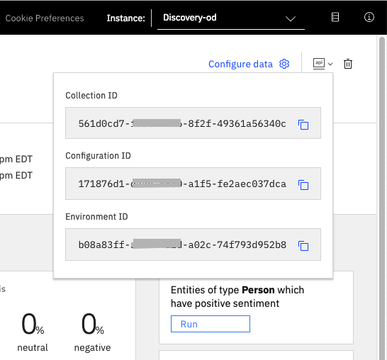
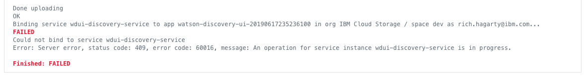

Learn the basics of extracting business insight using Watson Discovery¶
Learning outcomes¶
At the end of this module, attendees will understand all the different types of data, and the type of functions and queries they can apply to learn the most from the data they are trying to analyze.
Content:
What is Watson Discovery and how does it work- Airbnb example of using Watson Discovery to extract insights
- Uploading and configuring data
- Extracting basic insights
Summary¶
A standard search for a site can return too many results for someone to want to go through. However, it's possible to quickly build out a search interface for your IBM Watson Discovery instance using out-of-the-box UI components that query and manipulate the enriched data to return more relevant search results. This code pattern uses publicly available reviews on Airbnb listings to demonstrate how to use individual UI components to visualize insights. You can then easily switch out the data set to adapt it to your own use cases.
Description¶
By querying and manipulating enriched data, you can build a more insightful search interface. This code pattern provides a Node.js app built on the Watson Discovery Service that does just that. The pattern demonstrates how you can use individual out-of-the-box UI components to extract and visualize the enriched data provided by the Discovery analytics engine.
The main benefit of using the Watson Discovery Service is its powerful analytics engine that provides cognitive enrichments and insights into your data. The app in this code pattern provides examples of how to showcase these enrichments through the use of filters, lists, and graphs. The key enrichments are:
- Entities: People, companies, organizations, cities, and more
- Categories: Classification of the data into a hierarchy of categories up to 5 levels deep
- Concepts: Identified general concepts that aren't necessarily referenced in the data
- Keywords: Important topics typically used to index or search the data
- Sentiment: The overall positive or negative sentiment of each document
The app uses standard search UI components such as filter lists, tag clouds, and sentiment graphs, but also more complex Discovery options such as the passages and highlight features. With these two features, the app identifies the most relevant snippets in your data based on your query and is more likely to return the data that you're searching for.
When you have completed this code pattern, you should know how to:
- Load and enrich data in the Watson Discovery Service
- Query and manipulate data in the Watson Discovery Service
- Create UI components to represent enriched data created by the Watson Discovery Service
- Build a complete web app that uses popular JavaScript technologies to feature Watson Discovery Service data and enrichments
Flow¶
- Add the Airbnb review JSON files to the Discovery collection.
- Use the app UI to interact with the back-end server. The front-end app UI uses React to render search results and can reuse all of the views that are used by the back end for server-side rendering. The front end is using semantic-ui-react components and is responsive.
- Discovery processes input and routes it to the back-end server, which is responsible for server-side rendering of the views displayed on the browser. The back-end server is written using Express and uses an express-react-views engine to render views that are written using React.
- The back-end server sends user requests to the Watson Discovery Service. It acts as a proxy server, forwarding queries from the front end to the Watson Discovery Service API while keeping sensitive API keys concealed from the user.
UI controls and associated actions¶
Here is a rough sketch of the main UI screen, followed by a description of each UI component and their assoicated actions:

- Search field and search parameters: Return results based on search criteria. Search parameters will effect how the user will enter values, how they will be displayed, and limit the number of matches.
- List Filters: Multiple drop-down lists of filters that are applied to the search resullts. Each drop down list contains entities, categories, concepts and keywords associated with the results. For each drop down filter item, the number of matches will also be displayed. If a user selects a filter item, a new search will be conducted and will update the results panel (#3). Filter items selected will also effect what is shown in the tag cloud (#4).
- Search results and pagination menu: Shows a page of result items (e.g. 5 per page) and a pagination menu to allow the user to scroll through pages of result items. There will also be a drop-down menu that will allow the user to sort the entries based on date, score, and sentiment value.
- Tag cloud filter: Similar to the list filters (#2) but in a different format. One set of filter items (either entities, categories, concepts or keywords) can be displayed at one time. User can select/deselect items in the cloud to turn on/off filters. Applied filters in both filter views (#2 and #4) will always be in sync.
- Trend chart: Chart to show the sentiment trend for a specific entity, category, concept, or keyword over time. The data will reflect the current matching result set.
- Sentiment chart: Donut chart that shows the total percentages of postive, neutral and negative reviews of selected entities, categories, concepts, or keywords. The data will reflect the current matching result set.
Steps¶
- Clone the repo
- Create your Watson Discovery service
- Load Discovery files and configure collection
- Add Watson Discovery credentials
- Run the application
1. Clone the repo¶
git clone https://github.com/IBM/watson-discovery-ui
2. Create your Watson Discovery service¶
To create your Watson Discovery service:
-
Click Create resource on your IBM Cloud dashboard.
-
Search the catalog for
discovery. -
Click the Discovery tile to launch the create panel.

From the panel, enter a unique name, a region and resource group, and a plan type (select the default lite plan). Click Create to create and enable your service.
3. Load Discovery files and configure collection¶
Launch the Watson Discovery tool. Create a new data collection by selecting the Update your own data option. Give the data collection a unique name.

When prompted to get started by uploading your data, select and upload the first 2 json documents located in your local data/airbnb directory. Once uploaded, you can then use the Configure data option to add the Keyword Extraction enrichment, as show here:
Note: failure to do this will result in no keywords being shown in the app.
Once the enrichments are selected, use the Apply changes to collection button to upload the remaining json files found in data/airbnb. Warning - this make take several minutes to complete.
There may be a limit to the number of files you can upload, based on your IBM Cloud account permissions.
4. Add Watson Discovery credentials¶
Next, you'll need to add the Watson Discovery credentials to the .env file.
- From the home directory of your cloned local repo, create a .env file by copying it from the sample version.
cp env.sample .env
- Locate the service credentials listed on the home page of your Discovery service and copy the
API KeyandURLvalues.

- From your Discovery service collection page, locate the credentials for your collection by clicking the dropdown button located at the top right. Copy the
Collection IDandEnvironment IDvalues.

- Take the copied values and paste them into the
.envfile:
# Copy this file to .env and replace the credentials with
# your own before starting the app.
# Watson Discovery
DISCOVERY_URL=<add_discovery_url>
DISCOVERY_ENVIRONMENT_ID=<add_discovery_environment_id>
DISCOVERY_COLLECTION_ID=<add_discovery_collection_id>
DISCOVERY_APIKEY=<add_discovery_iam_apikey>
# Run locally on a non-default port (default is 3000)
# PORT=3000
5. Run the application¶
Install Node.js runtime or NPM.
Then run:
npm install
npm start
The application will be available in your browser at http://localhost:3000.
Note: server host can be changed as required in app.js and
PORTcan be set in the.envfile.
Sample UI layout¶

Note that each review will be truncated to 200 characters or less. A more... button will be provided for each review, and when clicked, the full review title and text will be displayed in a pop-up modal window, as shown below:

If the more... button is clicked, the review data will be passed back to Discovery so that it can be logged as a relevant review for the query. Refer to the Watson Discovery Continuous Relevancy Training section above for more information on this feature.
Troubleshooting¶
- Error: Environment {GUID} is still not active, retry once status is active
This is common during the first run. The app tries to start before the Discovery environment is fully created. Allow a minute or two to pass. The environment should be usable on restart. If you used
Deploy to IBM Cloudthe restart should be automatic.
- Error: Only one free environment is allowed per organization
To work with a free trial, a small free Discovery environment is created. If you already have a Discovery environment, this will fail. If you are not using Discovery, check for an old service thay you may want to delete. Otherwise use the .env DISCOVERY_ENVIRONMENT_ID to tell the app which environment you want it to use. A collection will be created in this environment using the default configuration.
- Error when loading files into Discovery
Loading all 2000 document files at one time into Discovery can sometimes lead to "busy" errors. If this occurs, start over and load a small number of files at a time.
- No keywords appear in the app
This can be due to not having a proper configuration file assigned to your data collection. See Step 3 above.
- When using the
Deploy to IBM Cloudbutton, you get a failure during theDeploy Stage, as shown in this log message:

This can occur if the discovery service is not yet provisioned (you can check the resourse list in the
IBM Clouddashboard to verify). If so, wait until the service is marked asProvisioned, and then hit theRedeploybutton at the top of theDeply Stagepanel. After successfully deploying and connecting to the discovery service, check the logs of the running deployed app to check its progress as it loads the json files into the discovery collection.
Conclusion¶
This code pattern explains how you can use individual out-of-the-box UI components to extract and visualize the enriched data provided by the Discovery analytics engine.